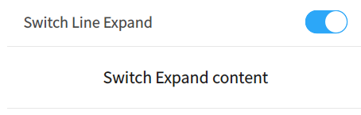

DSwitchLineExpand Class
class Dtk::Widget::DSwitchLineExpandDSwitchLineExpand 类提供了一种通过开关按钮来展开/合上显示内容的控件. More...
| Header: | #include <DSwitchLineExpand> |
Public Functions
| DSwitchLineExpand(QWidget *parent = 0) | |
| Dtk::Widget::DBaseLine * | header() |
| void | setExpand(bool value) |
| void | setTitle(const QString &title) |
Detailed Description
控件由标题栏和内容两部分组成，标题栏左侧显示控件标题，右侧显示一个开关控件， 用户通过点击右侧的开关控件，来控制标题栏下面的内容部分展开还是合上。

Member Function Documentation
DSwitchLineExpand::DSwitchLineExpand(QWidget *parent = 0)
DSwitchLineExpand 类的构造函数.
parent 指定了控件的父控件。
Dtk::Widget::DBaseLine *DSwitchLineExpand::header()
DSwitchLineExpand::header 用来获取标题栏控件。 Returns 标题栏控件。
void DSwitchLineExpand::setExpand(bool value)
DSwitchLineExpand::setExpand 用于控制控件是否展开。 value 为所要设置的展开状态，true 为展开，false 为合上。
Note: 这个函数同时会影响标题栏中开关按钮的状态。
void DSwitchLineExpand::setTitle(const QString &title)
DSwitchLineExpand::setTitle 用于设置控件的标题。 title 为所要设置的标题。